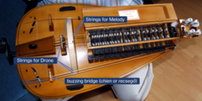

Today, most hurdy-gurdy players use metal-wound strings. It became popular in the twentieth century, especially for the heavier drone strings or for lower melody strings. These metal strings have low elasticity, and the length of the strings in the lower register can be shortened by making them thicker. In the Middle Ages, on the other hand, strings ware made from natural fibers found in the walls of animal intestines. This type of cord is known as Catgut or just gut. In Middle Age, metal strings made of brass, silver, gold, etc. were very valuable and were used only for certain instruments such as harps and Psalterium, an ancient stringed musical instrument also known as "tambourin à cordes". [Muskett 1998]
The number of strings depends on the size of the instrument. Smallest one has only three strings, while larger one has up to 15 strings although the six-stringed French vielle à roue is the best-known and most common sort. There are two types of strings; one is for melody and the other is for the drone (a harmonic or monophonic effect or accompaniment where a note or chord is continuously sounded throughout most or all of a piece.) .
In some types of hurdy-gurdy, notably the French vielle à roue and the Hungarian tekerőlant, makers have added a buzzing bridge—called a chien (French for dog) or recsegő (Hungarian for "buzzer")—on one drone string. The free end of the chien (called the hammer) rests on the soundboard of the hurdy-gurdy and is more or less free to vibrate. When the wheel is turned regularly and not too fast the pressure on the string (called the trompette on French instruments) holds the bridge in place, sounding a drone. When the crank is struck, the hammer lifts up suddenly and vibrates against the soundboard, producing a characteristic rhythmic buzz that is used as an articulation or to provide percussive effect, especially in dance pieces. Muskett, Doreen (1998). Hurdy-Gurdy Method. England: Muskett Music.
